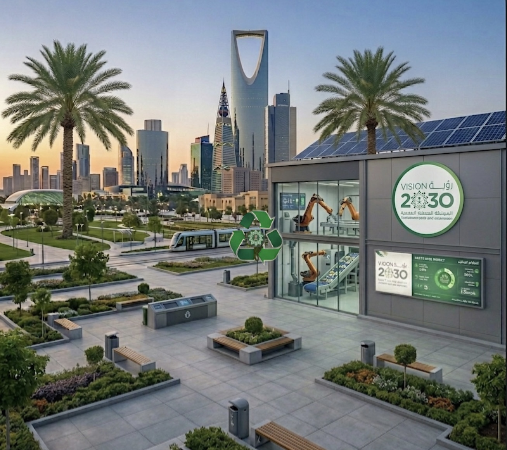

منصة ذكية تعتمد على تقنيات الذكاء الاصطناعي لمساعدتك في تصنيف النفايات بسرعة ودقة، والمساهمة في دعم الاستدامة البيئية
يهدف هذا المشروع إلى معالجة مشكلة صعوبة فرز النفايات من خلال تطوير نظام ذكي يعتمد على تقنيات التعلم العميق لتصنيف النفايات بشكل دقيق وسريع. يساهم النظام في تحسين كفاءة إعادة التدوير ودعم الجهود البيئية بما يتماشى مع رؤية المملكة 2030.

أرقام تعكس دقة وسرعة الذكاء الاصطناعي في خدمة البيئة
* تم تدريب النموذج على بيانات مدمجة من قاعدتي بيانات TrashNet و Garbage Classification (Kaggle) — إجمالي ≈ 8,800 صورة.
نحن فريق من طالبات قسم علوم الحاسب بجامعة تبوك، نعمل على تطوير نظام ذكي لتصنيف النفايات باستخدام تقنيات التعلم العميق، بهدف تحسين كفاءة عمليات الفرز ودعم الاستدامة البيئية.